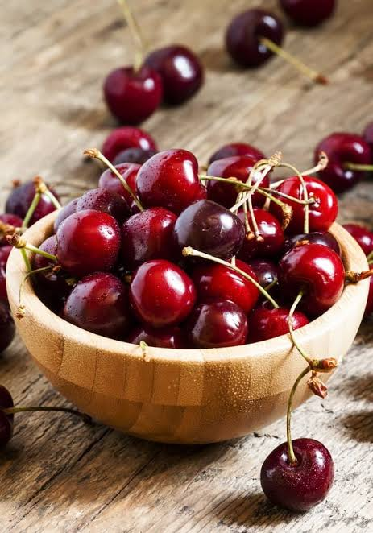

Confitures &
Fruits ConfitsLes vergers gourmands du Roussillon


⟹ Cerises de Céret et douceurs du Vallespir ⟸
L’histoire des confitures et des fruits confits du Roussillon commence bien avant l’apparition des recettes modernes : elle est d’abord celle d’un territoire fruitier. Entre Méditerranée et Pyrénées, la plaine du Roussillon, le Vallespir et les vallées abritées bénéficient d’un ensoleillement important, de printemps précoces et d’une grande diversité de terroirs. Cerises, abricots, pêches, figues, melons, coings, poires et agrumes y ont trouvé des conditions favorables. Pendant des siècles, ces fruits ont été consommés frais mais aussi séchés, cuits au miel ou conservés dans des sirops afin de prolonger leur consommation au-delà de la récolte.
Le sucre, longtemps produit coûteux, transforme progressivement ces pratiques de conservation. À mesure qu’il devient plus accessible à l’époque moderne puis au XIXe siècle, confitures, gelées, marmelades et fruits confits gagnent les cuisines domestiques et les ateliers d’artisans. La cuisson du fruit avec le sucre permet non seulement d’éviter les pertes lors des récoltes abondantes, mais aussi de concentrer les parfums et de constituer des réserves pour l’hiver. Dans les familles rurales, les recettes suivent le calendrier des vergers : chaque maturité appelle sa bassine, ses bocaux et ses proportions transmises d’une génération à l’autre.

Céret occupe une place particulière dans cette histoire. Située dans le Vallespir, au pied des Albères et du Canigou, la ville bénéficie d’un microclimat qui favorise une maturation très précoce des cerises. Si l’agriculture cérétane fut longtemps diversifiée — avec notamment une réputation ancienne pour les noisettes — la cerise prend son véritable essor au début du XXe siècle, particulièrement à partir des années 1920. Les vergers se développent sur les coteaux et dans la vallée, et la précocité de la récolte devient un avantage commercial décisif : les premières cerises françaises de la saison peuvent atteindre rapidement les marchés urbains.
L’année 1932 marque durablement la mémoire locale. En mai, des cerises de Céret sont transportées par avion et offertes au président de la République. De cet événement naît la tradition, maintenue depuis, d’adresser chaque année au chef de l’État une cagette des premières cerises de la saison. Ce geste, à la fois promotionnel et symbolique, contribue puissamment à la réputation nationale de Céret comme « capitale de la cerise ». Dans les années 1930, la production prend une ampleur considérable et le canton concentre une part majeure des cerisiers des Pyrénées-Orientales.
Cette économie fruitière favorise naturellement la transformation. Les fruits les plus beaux partent sur les marchés, tandis que ceux qui sont trop mûrs, légèrement marqués ou simplement excédentaires peuvent être transformés. La confiture devient alors un moyen intelligent de valoriser la récolte entière. La cerise, emblématique de Céret, côtoie l’abricot rouge du Roussillon, la pêche, la figue, le coing ou encore le melon. Les artisans recherchent une cuisson suffisamment courte pour préserver le goût du fruit, tandis que les pratiques familiales emploient traditionnellement de larges bassines, souvent en cuivre, qui facilitent l’évaporation.
Le fruit confit relève d’un principe différent et plus patient. Il ne s’agit plus seulement de cuire le fruit dans le sucre, mais de remplacer progressivement une partie de son eau par un sirop de plus en plus concentré. Cette technique, héritière d’une longue histoire méditerranéenne et confiseuse, permet de conserver entiers ou en morceaux des fruits dont la texture et la couleur deviennent caractéristiques. Cerises, écorces d’agrumes, figues, melons et autres fruits peuvent ainsi entrer dans les pâtisseries, brioches, décors de fête ou assortiments de confiserie.
Au XXe siècle, l’agriculture roussillonnaise se modernise : irrigation, sélection variétale, amélioration des transports et développement des marchés nationaux modifient la production. La cerise Burlat, très précoce, devient l’une des variétés emblématiques de Céret. Dans le même temps, les conserveries et ateliers artisanaux perfectionnent leurs méthodes, tandis que la stérilisation des bocaux et l’amélioration des emballages rendent les confitures plus faciles à commercialiser. Les recettes familiales deviennent progressivement aussi des produits de terroir recherchés par les visiteurs.
Les crises agricoles, la concurrence d’autres bassins de production et l’évolution des coûts de main-d’œuvre entraînent ensuite un recul des surfaces de vergers, notamment autour de Céret. Mais cette diminution quantitative renforce paradoxalement la valeur patrimoniale de la production. La première cerise, les marchés de printemps, les fêtes consacrées au fruit et les confitures artisanales entretiennent aujourd’hui la mémoire d’une économie qui a profondément façonné les paysages et la vie sociale du Vallespir.
Les confitures et fruits confits du Roussillon résument ainsi plusieurs siècles de relation entre abondance fruitière et nécessité de conserver. Derrière un pot de confiture de cerises ou quelques fruits confits se retrouvent le climat méditerranéen, le travail des arboriculteurs, le calendrier très précis des récoltes et une culture domestique du « rien ne se perd ». De la cuisine familiale aux ateliers contemporains, cette tradition continue de transformer les fruits du Roussillon en véritables conserves de saison et de mémoire.
Tant qu'il y aura des cerises sur les coteaux de Céret, elles partiront chaque printemps vers Paris.
— Tradition instaurée en 1932Porte d'entrée du Vallespir, Céret a aussi accueilli au début du XXe siècle des peintres cubistes venus chercher la lumière catalane, faisant de la ville un foyer artistique autant que fruitier. Le pont du Diable, ouvrage médiéval enjambant le Tech, reste l'un des symboles de la cité.
Si les volumes de production ont fortement diminué depuis les 5 000 tonnes des années 1970, concurrencés par d'autres bassins de production français, les artisans confituriers du Roussillon continuent de transformer une partie de la récolte selon des méthodes largement inchangées depuis plusieurs générations.
Le pont du Diable à Céret, cet ouvrage médiéval du XIVe siècle enjambe le Tech de sa longue arche de pierre.
Musée d'art moderne de Céret consacré aux artistes qui ont séjourné dans la ville, de Picasso à Braque en passant par Soutine.
Amélie-les-Bains station thermale voisine, nichée dans la vallée du Tech.
Massif du Canigou ses contreforts dominent tout le Vallespir et offrent de nombreux sentiers de randonnée.